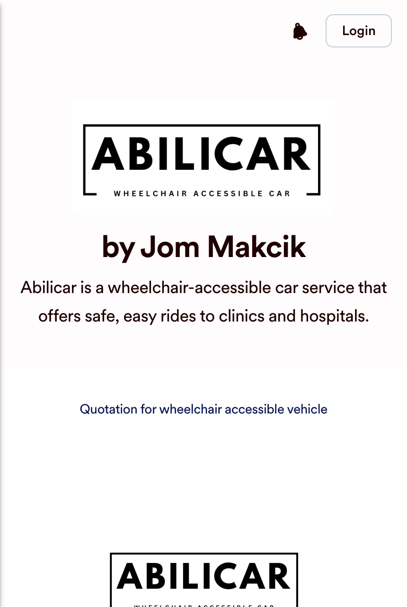
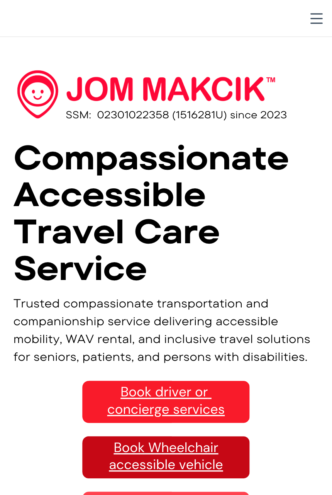
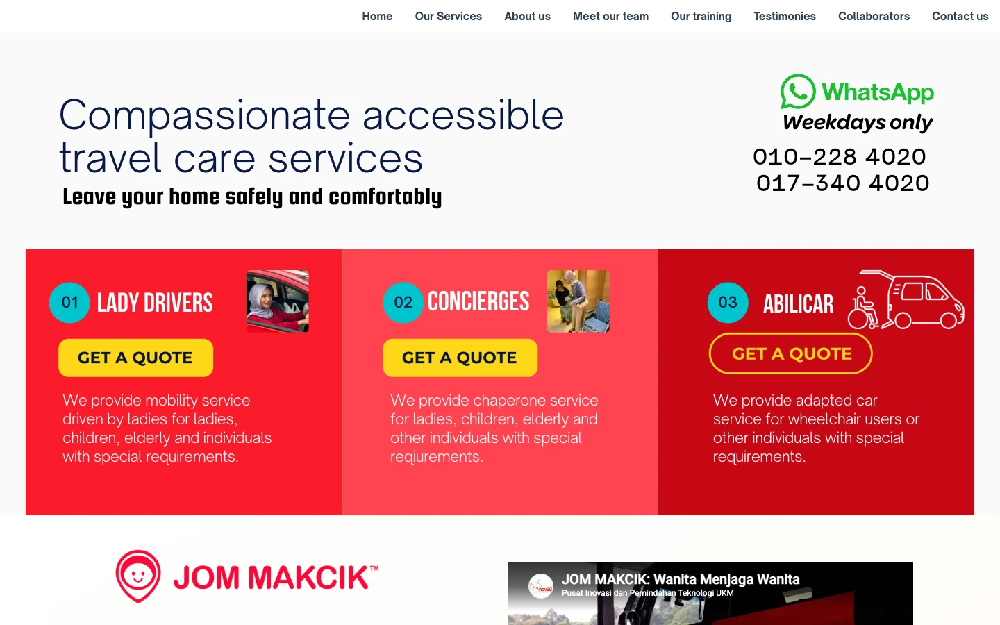
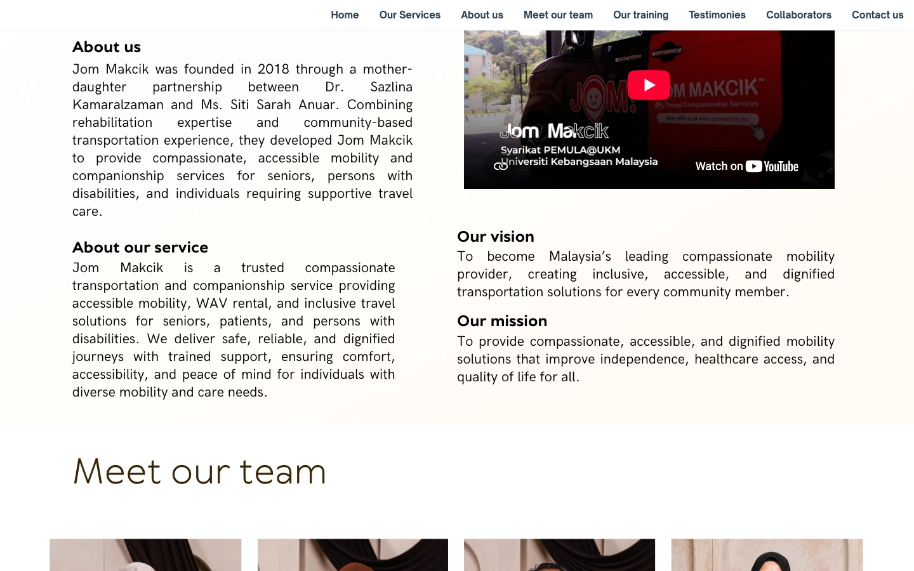
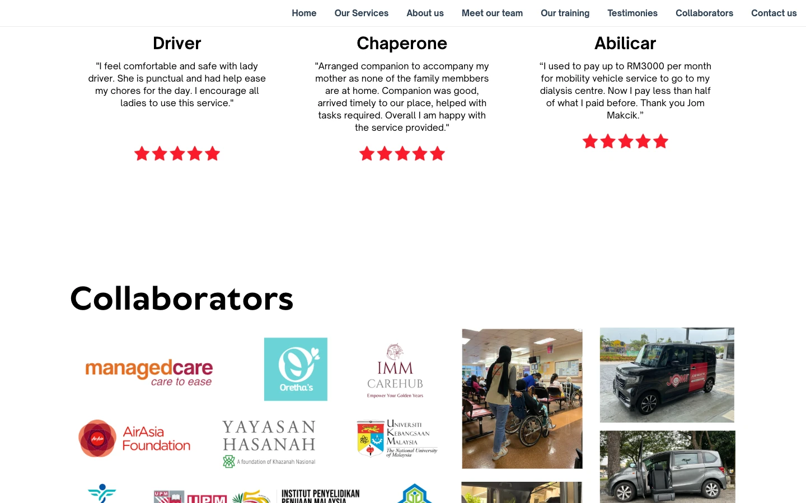
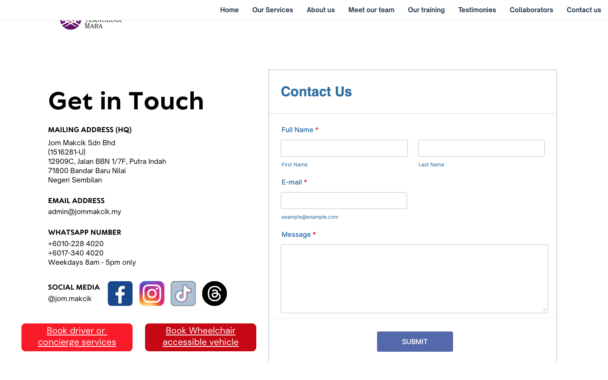

The most institutionally credentialed operator in Malaysian accessible mobility is running the slowest, thinnest and least accessible website in its own category. Nothing here is a taste argument. Every number below was measured on 9 September 2026 and can be rerun.
The business is strong and the website is not carrying it. Jom Makcik has PERKESO, Jabatan Kebajikan Masyarakat, Yayasan Hasanah, AirAsia Foundation, UKM, UPM, MyAgeing, UTM, UiTM, MAHSA Specialist Hospital and airasia ride on its collaborator wall, roughly 600 trained women drivers, and a wheelchair accessible fleet that costs RM98,000 a vehicle. None of that is legible to a person who lands on the site.
The site is a Canva design export. That is a fact from the source code, not a guess. It means the entire site is one page, rendered by JavaScript, with no headings, no alt text, no blog, no schema, and no second URL. Search engines see roughly 550 words.
On a normal Malaysian phone connection the homepage takes 13.1 seconds to show its main content and 64 seconds to finish loading. The nearest commercial rival does it in 3.5 seconds. A volunteer run NGO does it in 1.9.
Every one of the 53 images on the mobile page is missing alt text, and the page contains zero heading elements. A screen reader user, which is to say a share of this exact customer base, gets an unstructured wall. That is the single hardest thing in this document to defend if a journalist or a funder ever runs a check.
The highest value service has the worst path to purchase. AbiliCar, described by the company itself as its most popular service, cannot be booked in Jom Makcik's own app. It is pushed to a JotForm page that greets a wheelchair user with a Login button, a US flag, and JotForm's own "Create your own App" advertisement.
Grab entered this category in December 2025 and published Jom Makcik's moat for them. GrabAssist carries foldable wheelchairs only, and Grab's drivers are not permitted to leave the vehicle. Jom Makcik carries people who stay seated in their chair, and walks them to the door. Nobody visiting jommakcik.my would learn either fact.
Scores are out of 10 and reflect the current live site only, not the business behind it. The gap between the two is the whole opportunity.
Every item below is real and public. The site displays most of them, but as undifferentiated logos with no caption, no relationship stated, and no page to land on.
| Asset | What it is | Where it appears on the site today |
|---|---|---|
| PERKESO (SOCSO) | Statutory social security body | Unlabelled logo in the Collaborators grid |
| Jabatan Kebajikan Masyarakat | Department of Social Welfare | Unlabelled logo in the Collaborators grid |
| Yayasan Hasanah | Khazanah Nasional's foundation | Unlabelled logo, plus an Instagram embed in the hero |
| AirAsia Foundation | Programme funder, appears twice at two sizes | Body text under two training cards |
| UKM | Parent university, PEMULA@UKM spin off | Logo, and a YouTube embed in About |
| MyAgeing (UPM) | Malaysian Research Institute on Ageing | Logo in a training card |
| UTM, UiTM | Driver training partners | Logos |
| MAHSA Specialist Hospital, Hospital Pakar An-Nur | Healthcare destinations | Logos |
| airasia ride | Commercial ride hailing platform | Logo |
| managedcare, IMM CareHub, Oretha's | Care sector partners | Logos |
| ~600 Adinita drivers | Trained women drivers, 75% revenue share | Nowhere. "Adinita Login" is the only trace, unexplained |
| AbiliCar fleet | Honda N-Box, factory ramp, RM98,000 each | One line card, one outline icon |
| Four states served | Selangor, KL, Putrajaya, Negeri Sembilan | Nowhere. No coverage map, no service area list |
Medical lecturer in Rehabilitation Sciences at UKM's Faculty of Health Sciences. Medical degree, RCSI 1997. MSc Rehabilitation Sciences, Nottingham, 2003. Lead consultant on the Prevalence Study on Autism in Malaysia. Started the company because her own patients kept missing therapy for want of a ride.
Daughter, co-founder. The mother and daughter origin is one of the most repeatable stories in the category and appears once, in a justified paragraph, below the fold.
A clinician founder is the strongest possible trust signal in medical transport. On the current site Dr Sazlina appears as a photograph with the caption "Chief Executive Officer and Co-founder". Her clinical background, the reason to believe, is not on the page at all.
Three lines from the page source settle it. This is not a criticism of the person who built it: Canva is a fine way to get something live quickly, and it clearly did that job. It is simply the wrong container for a business at this stage.
<meta name="app-name" content="export_website">jommakcik.my, view source, 9 Sep 2026
window['__canva_public_path__'] = '_assets/';
window['__canva_website_bootstrap__']
The page is an empty <div id="root"> filled in by JavaScript. Any crawler, preview bot or assistive tool that does not execute a megabyte of script sees nothing.
Canva emits absolutely positioned text boxes, not document structure. That is why the page has zero h1 to h6 elements. It cannot be fixed inside Canva.
All 53 images render without an alt attribute. There is no field in the export to set one.
One URL, one sitemap entry. No service pages, no city pages, no articles, no case studies. Nothing to rank, nothing to link to, nothing to send a specific person to.
No LocalBusiness, Service, FAQ or Review markup. Google has no structured way to learn that this is a medical transport provider in Negeri Sembilan.
Every image ships as PNG or JPG at full size. The largest is a 737 KB PNG. No WebP, no AVIF, no responsive sizes.
| Layer | Finding | Verdict |
|---|---|---|
| CDN | Cloudflare, KUL edge. TTFB 81 to 145 ms | Good |
| Redirects | www and http both 301 to https canonical host | Correct |
| Google Workspace on the domain | Good | |
| Security headers | X-Frame-Options, X-Content-Type-Options, Referrer-Policy present. No CSP | Adequate |
| Booking app host | Separate origin on DigitalOcean, responds in 0.26 to 0.62 s | Healthy |
| robots.txt | 404, does not exist | Missing |
The plumbing is not the problem. Everything slow and broken on this site is in the layer that was exported out of a design tool.
Headless Chrome, Pixel 5 emulation, Slow 4G at 1.6 Mbps with 150 ms latency and a 4x CPU throttle. That is Google's own standard mobile test profile, and it is a fair approximation of an adult child checking options on their phone outside a hospital.
| Site | First paint | Main content (LCP) | Blocked time | Full load | Requests | Weight |
|---|---|---|---|---|---|---|
| jommakcik.my | 7.55 s | 13.09 s | 5,801 ms | 64.4 s | 144 | 12.2 MB |
| loveonwheels.com.my | 3.48 s | 13.11 s | 79 ms | 17.0 s | 37 | 2.5 MB |
| pearlcaremobility.com.my | 2.24 s | 12.82 s | 32 ms | 12.8 s | 58 | 2.3 MB |
| mobiliti.org.my NGO | 1.92 s | 6.09 s | 0 ms | 12.7 s | 30 | 2.3 MB |
| Resource | Desktop transfer | Note |
|---|---|---|
| Images | 12.65 MB | All PNG and JPG. No WebP or AVIF. Largest single file 737 KB |
| Fonts | 1.44 MB | Four woff2 files at roughly 190 KB each |
| JavaScript | 1.19 MB | Canva runtime, one bundle alone is 821 KB |
| CSS | 51 KB | Fine |
| Total | 15.3 MB | 17.9 MB decoded, 109 requests |
Converting the images alone to modern formats at correct sizes would remove roughly 10 MB. On a metered prepaid plan, one visit to this homepage costs a visitor real money.
Measured in a real browser after full render, not from the source. These are not close calls or matters of interpretation.
| Check | Desktop | Mobile | Standard | Result |
|---|---|---|---|---|
| Heading elements | 0 | 0 | At least one h1 | Fail |
| Images missing alt text | 20 of 20 | 53 of 53 | WCAG 1.1.1, Level A | Fail |
| Tap targets under 44 px | 11 of 22 | 17 of 23 | WCAG 2.5.8 | Fail |
| Smallest CTA height | 28 px | 22 px | 44 px minimum | Fail |
| Mobile menu button | n/a | 24 x 24 px | 44 x 44 px | Fail |
| Body copy size | 21.3 px | 12.8 px | 16 px recommended | Fail |
| Contact details size | 10 px | 12.8 px | 16 px recommended | Fail |
| aria-label attributes | 0 | 1 | Icon links need names | Fail |
| Native button elements | 0 | 1 | Keyboard operable controls | Fail |
| Page scrolls in a nested div | yes | yes | Document scroll | Risk |
| Language declared | en-GB only | BM alternate | Gap | |
| Layout stability (CLS) | 0.00 | Under 0.1 | Pass | |
Not every wheelchair user needs a screen reader, but a meaningful share of an ageing, chronically ill customer base has reduced vision, tremor or cognitive load. 12.8 px text and a 24 px menu button exclude them from booking without help.
PERKESO, JKM and Yayasan Hasanah operate under accessibility expectations. An audit of the website of their accessible transport partner is an easy, embarrassing check to fail.
Jom Makcik gets warm press. The same story runs cold the first time someone notices the gap between the mission and the markup.
Headings, alt text, 16 px minimum type and 44 px targets are a rebuild default, not a premium feature. Done properly once, it never has to be argued again.
| Signal | Current state | Effect |
|---|---|---|
| Indexable pages | 1 | One page cannot rank for driver, chaperone, WAV, dialysis, airport and four states at once |
| sitemap.xml | Exists, contains exactly one URL | Confirms the above to Google in writing |
| robots.txt | 404 | Minor, but a missing basic |
| Title tag | "Jom Makcik" | No service, no city. A searcher scanning results has no reason to click |
| Meta description | Mentions companionship only | Never says wheelchair, WAV, dialysis, hospital or Nilai |
| og:image | Missing | Every WhatsApp and Facebook share renders a blank grey card. On a business that spreads by referral, this is the expensive one |
| Canonical, og:url | Missing | Housekeeping |
| Structured data | None | No LocalBusiness, Service, FAQ or Review markup. No rich result is possible |
| Headings | None | Google cannot read a topic hierarchy that does not exist |
| Word count | ~550 for the entire site | Thin by any standard |
| Bahasa Melayu | None | Half the addressable market, including most drivers, reads BM first |
No page exists.
No page exists, despite a testimonial about exactly this.
No page exists.
No BM content at all.
No pricing anywhere on the site.
The chaperone product has no page.
The hero presents four buttons at near equal weight. Two of them make money. Two of them serve existing users and staff.
| Button | Goes to | Serves | Verdict |
|---|---|---|---|
| Book driver or concierge services | app.jommakcik.my/cust_booking | New customer | Revenue, buried among four |
| Book Wheelchair accessible vehicle | app.jotform.com | New customer, highest value | Broken experience, see below |
| Adinita Login | app.jommakcik.my/login | Drivers | Should be a small footer link |
| Client Login | app.jommakcik.my/portal | Existing clients | Should be a small header link |
All four render with underlined text inside the button, the browser default for a link. It reads as unfinished on the most important element on the page.
The company told Free Malaysia Today that AbiliCar is "our most popular service now". Here is what a customer meets when they click it.


The contact block is a JotForm iframe in default JotForm blue on a red brand, with a purple blue Submit button. It collects Full Name, E-mail and Message.
| # | The site says | Contradicted by |
|---|---|---|
| 1 | "since 2023" under the logo | "founded in 2018" in About, on the same page |
| 2 | SSM 02301022358 | 202301022358 on their own JotForm page |
| 3 | "Weekdays 8am to 5pm only" | "Isnin to Jumaat 8am to 12am" in the booking app |
| 4 | "Book driver or concierge services" | "GET A QUOTE" on the three service cards |
| 5 | "Concierges" as the section title | "Chaperone" in the app, and in the testimonial label |
| 6 | "abilicar" in lower case | "ABILICAR" and "Abilicar" elsewhere |




| Element | Found | Should be |
|---|---|---|
| Typefaces | Seven, plus JotForm's and YouTube's inside the embeds | Two, three at most |
| Reds | Three panel fills: #F91B2A, #FF434F, #C60815 | One primary, one dark, one tint |
| Stray colour | #00C4CC on the 01/02/03 circles. That is Canva's own brand teal, almost certainly an untouched default | Removed |
| Buttons | Underlined text inside every CTA. Yellow solid and yellow outline in the same row | One button system |
| Hero visual | An Instagram embed showing "hasanah.socialenterprise" truncated, with "View profile", "89 likes" and "Add a comment" | The company's own photography |
| Training section | Three more raw social embeds with visible carousel arrows and "..." menus | Owned images with captions |
| Body copy | Fully justified | Ragged right |
| Team photography | Warm brown and cream, a palette used nowhere else. Inconsistent crops and name plate heights | One treatment |
| Social icons | Stock platform badges, four shapes, full colour | One monochrome set |
| Footer | None. No copyright, no privacy policy, no terms, no service areas | A real footer |
| Second brand | ABILICAR uses an unrelated black boxed wordmark on the JotForm page | A managed sub brand or one brand |
I used to pay up to RM3000 per month for mobility vehicle service to go to my dialysis centre. Now I pay less than half of what I paid before. Thank you Jom Makcik.jommakcik.my, testimonial, labelled only "Abilicar", no name, no date
That is roughly RM1,500 a month saved on a recurring, non negotiable medical journey, from a customer, in their own words. It sits in 12.8 px grey text, three quarters of the way down a single page, attributed to nobody.
No name, no initial, no town, no photograph, no date. An unverifiable quote is worth a fraction of a verified one, and this category runs entirely on trust.
The site never states a rate. The only number on the whole page is inside this quote. A family comparing options cannot compare.
For a company that has been running since 2018 across four states. There is no review wall, no Google reviews embed, no case study, no before and after.
No FAQ. Nothing on how a booking works, what a chaperone actually does, what happens if the appointment overruns, whether the driver waits, or what a wheelchair user should expect.
Grab launched GrabAssist in Malaysia in December 2025, Klang Valley, with roughly 100 driver partners trained by certified care providers and advance booking from 75 minutes to 90 days. That is a serious entrant. Read what Grab publishes about its own limits.
GrabAssist accommodates a "foldable wheelchair or crutches". It uses Plus range cars with a larger boot. It is not a wheelchair accessible vehicle. A person who cannot transfer out of their chair cannot use it.
"our driver-partners are unable to leave their vehicles unattended. If you require assistance getting to the pickup point or after drop-off, we encourage you to arrange for someone to assist you."
| Operator | Type | Non foldable wheelchair | Walks you in | Publishes price | Content programme |
|---|---|---|---|---|---|
| Jom Makcik | Social enterprise, 4 states | Yes, AbiliCar | Yes, chaperone | No | One page |
| GrabAssist | Platform, Klang Valley | No | No | No | Grab's own |
| Love On Wheels | Commercial | Yes | Unstated | No | Blog and state pages |
| Pearlcare Mobility | Commercial, PJ | Yes | Caregiver option | No | Service pages |
| Mobiliti | NGO, Klang Valley | Yes, hydraulic lift | Unstated | RM17 one way | Association site |
Two open lanes, and Jom Makcik is the only operator positioned to take both: the only provider that both carries a seated wheelchair user and sends a trained companion, and the only commercial operator that could publish honest prices first. Full detail in the Competitors board.
Correct the SSM number and the 2018 versus 2023 contradiction. Settle the hours question and say the true one everywhere. Add an og:image so shared links stop rendering blank. Demote the two login buttons. Put WhatsApp above the fold on mobile as a tap to chat link, not text.
Off Canva. Proper HTML with headings and alt text, 16 px minimum type, 44 px targets, WebP images, under 1 MB per page. A page each for AbiliCar, Lady Drivers, Chaperone, plus coverage, pricing, FAQ, About, and a proof page for the institutional partners. Bahasa Melayu alongside English. Schema markup. A footer with privacy and terms.
One booking flow that includes AbiliCar, captures phone, service, date, pickup, destination and wheelchair type, and hands off to WhatsApp. Then the content programme that takes the search ground Love On Wheels is currently taking uncontested.
Two thirds of Malaysian seniors miss medical appointments because they cannot get there. That is the problem statement, and their own partner published it.
Stay in your own wheelchair. Have someone walk you in and wait. Say it plainly, in the hero, where a comparison shopper will see it.
Founded by a rehabilitation medicine lecturer who watched her own patients miss therapy for want of a ride. That is the reason to believe, and it is currently absent.
Nobody commercial in this category does. First mover on honest pricing takes the "no surprises" position on a recurring medical spend.
One line each for PERKESO, JKM, Yayasan Hasanah, UKM and the hospitals. A logo with a sentence is worth ten logos without one.
Six hundred trained women drivers is a headline, a recruitment engine and a safety argument all at once. Right now it is a login button.
| # | Area | Finding | Fix | Severity | When |
|---|---|---|---|---|---|
| 01 | Accessibility | 53 of 53 images have no alt text; 0 heading elements on the page | Rebuild off Canva with real HTML structure and written alt text | Critical | Stage 2 |
| 02 | Speed | LCP 13.1 s and 5.8 s blocked on Slow 4G; 12.2 MB mobile page | Modern formats, correct sizes, drop the Canva runtime | Critical | Stage 2 |
| 03 | Funnel | AbiliCar, the most popular service, is not bookable in their own app and lands on a JotForm login screen with a US flag | One booking flow covering all three services | Critical | Stage 3 |
| 04 | Trust | SSM printed as 02301022358 on the homepage; correct number is 202301022358 | Correct the digit | Critical | Stage 1 |
| 05 | Trust | "since 2023" contradicts "founded in 2018" on the same page | Pick the true framing: founded 2018, incorporated as Jom Makcik Sdn Bhd 2023 | High | Stage 1 |
| 06 | Revenue | "Weekdays 8am to 5pm only" printed at the point of conversion, contradicted by the app's 8am to 12am | Confirm the real policy and state one version everywhere | High | Stage 1 |
| 07 | Search | og:image missing, so every shared link renders a blank card | Add og:image, og:url and canonical | High | Stage 1 |
| 08 | Funnel | Two of four hero buttons are staff and client logins | Demote both to small header and footer links | High | Stage 1 |
| 09 | Funnel | Contact form captures no phone number on a WhatsApp led business | Rebuild the form around phone, service, date, pickup, wheelchair type | High | Stage 2 |
| 10 | Search | One indexable page, one sitemap URL, no schema, no BM version | Service, coverage, pricing, FAQ and proof pages in EN and BM with LocalBusiness and Service markup | High | Stage 2 |
| 11 | Proof | The RM3,000 to under RM1,500 dialysis saving is unattributed 12.8 px text near the page bottom | Verify with the customer, attribute, and put it in the hero | High | Stage 1 |
| 12 | Proof | Sixteen institutional logos with no explanation of any relationship | One sentence per partner, on a proof page | Medium | Stage 2 |
| 13 | Brand | Hero's main visual is an Instagram embed showing a funder's truncated handle | Replace with owned photography of an actual journey | Medium | Stage 2 |
| 14 | Brand | Seven typefaces, three reds, and Canva's brand teal on the service numbers | Two typefaces, one red scale, remove the teal | Medium | Stage 2 |
| 15 | Brand | Underlined text inside every button; two button styles in one row | One button system | Medium | Stage 2 |
| 16 | Legal | No footer, no privacy policy, no terms on the website; both exist only on the JotForm page | Real footer with policy, terms, SSM, coverage and hours | Medium | Stage 2 |
| 17 | Mobile | 12.8 px body copy, 22 px CTAs, 24 px menu button | 16 px minimum, 44 px minimum targets | High | Stage 2 |
| 18 | Positioning | The site never states the two things GrabAssist cannot do | Put "stay in your own wheelchair" and "we walk you in" in the hero | High | Stage 1 |
| 19 | Positioning | Adinita, roughly 600 trained women drivers, appears only as a login label | A named programme page, with recruitment | Medium | Stage 2 |
| 20 | Positioning | Dr Sazlina's clinical background is not on the site | Founder story with the rehabilitation medicine credential | Medium | Stage 2 |
| 21 | Content | Roughly 550 words total; no FAQ, no coverage list, no explanation of how a booking works | Write the operating detail a worried family needs | Medium | Stage 2 |
| 22 | Pricing | No rate published anywhere, in a category where only the NGO publishes one | Publish indicative rates and take the transparency position | Medium | Stage 3 |
| 23 | Technical | robots.txt returns 404 | Add it | Low | Stage 1 |
| 24 | Brand | ABILICAR runs a second, unrelated wordmark on the JotForm page | Decide: managed sub brand or one brand | Low | Stage 2 |
| Term | Meaning |
|---|---|
| LCP | Largest Contentful Paint. When the biggest thing on screen finishes drawing. Google treats under 2.5 s as good and over 4 s as poor |
| FCP | First Contentful Paint. When anything at all appears |
| TBT | Total Blocking Time. How long the phone was too busy to respond to a tap |
| CLS | Cumulative Layout Shift. How much the page jumps while loading. Jom Makcik scores a clean 0.00 |
| Alt text | The written description of an image, read aloud by screen readers and used by Google |
| Schema markup | Machine readable tags telling Google this is a local business, a service, a review |
| og:image | The picture that appears when a link is shared on WhatsApp or Facebook. Missing here |
| WAV | Wheelchair Accessible Vehicle. A vehicle with a ramp or lift, so a passenger stays in their own chair |
| WCAG | The international web accessibility standard. Level A is the minimum bar |